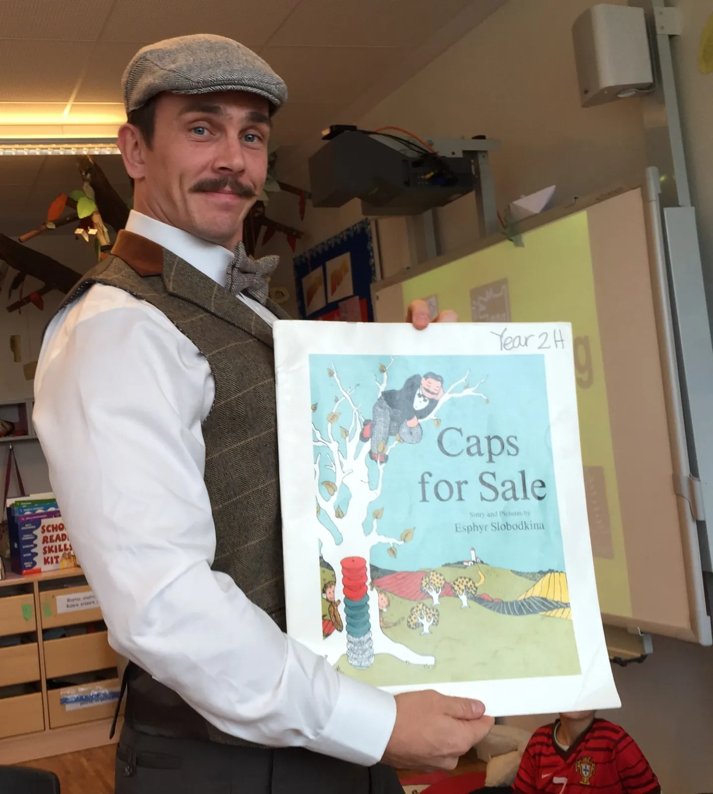
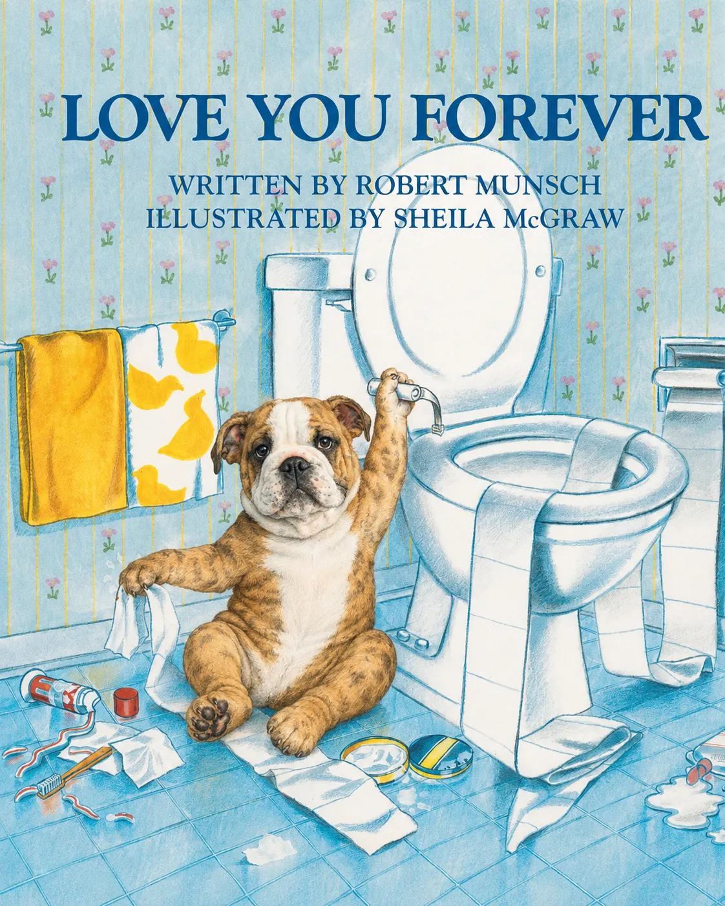
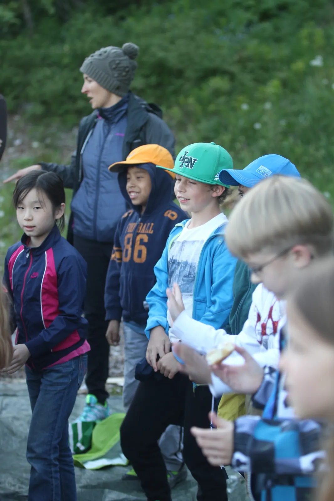
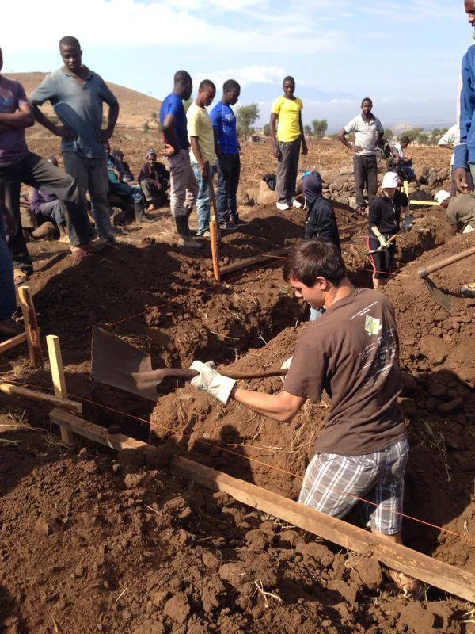
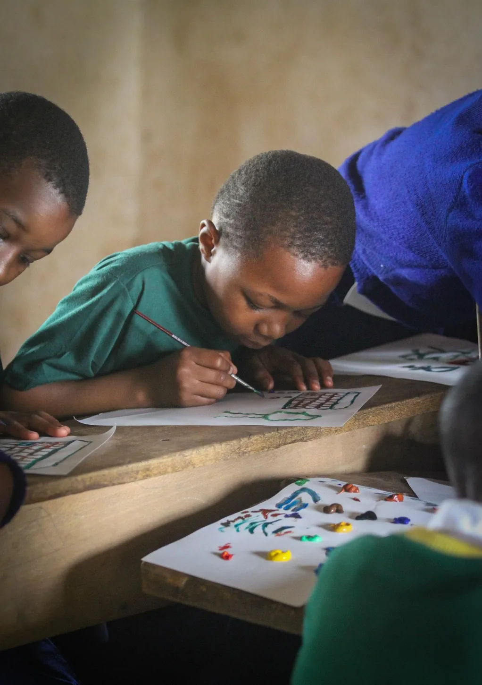
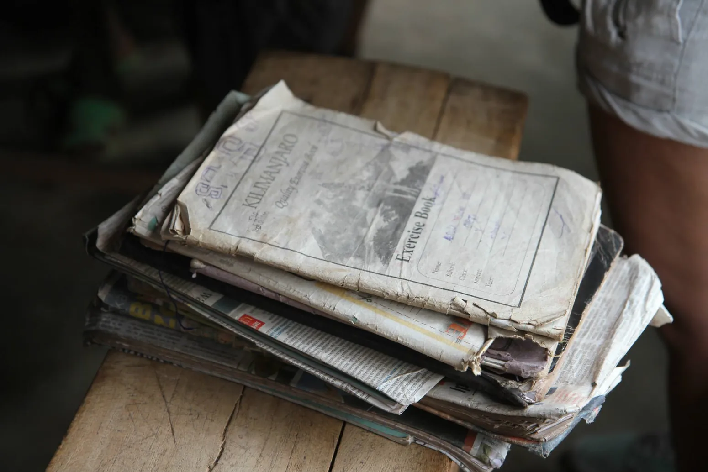
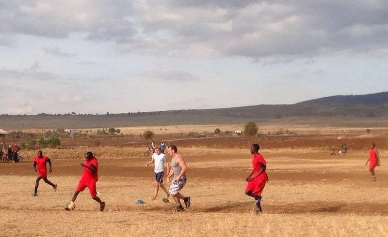
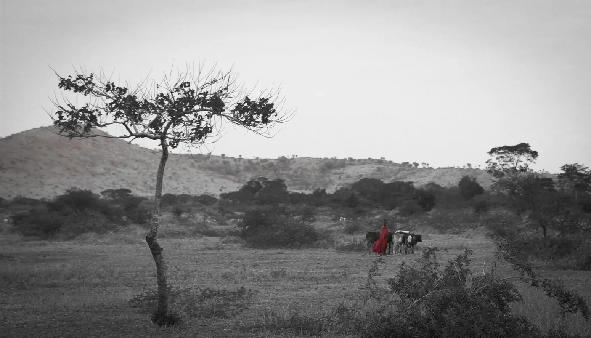

A creative Primary film
A short, silent excerpt from a Primary media project
Selected practice & experiences
Learning that is rigorous, memorable, collaborative — and occasionally a little unconventional.
An evolving collection of classroom projects, creative teaching, educational technology, community activities and learning beyond school walls.
Explore the projects ↘
Bringing stories to lifeI want pupils to ask questions, take intellectual risks, make things, move, laugh and see themselves as capable learners.
These photographs and short clips offer a glimpse into different learning experiences, from literacy and imaginative play to school community projects, technology and outdoor education. The aim is not novelty for its own sake, but purposeful experiences that pupils remember and learn from.
These examples offer a selection of the creative work, collaborative experiences and learning opportunities I have supported throughout my career.
Books, character, costume and physical environments can open the door to language, discussion and deep engagement.


Creative tasks can bring together language, planning, media and collaborative problem-solving.



A short, silent excerpt from a Primary media project
Shared experiences outside ordinary lessons help connect classroom learning, initiative and the wider school community.


Technology becomes meaningful when it invites experimentation, observation and questions rather than passive consumption.
Students observe a quadruped robot demonstration · short video excerpt
Teacher and students exploring a hands-on task · short video excerpt
Movement, unfamiliar settings and shared challenges support independence, confidence and relationships.

School ski programme · short video excerpt
Learning in a mountain environment · short video excerpt
Learning beyond borders
Some of the most valuable learning takes place when we step outside the environments we know.
While teaching at the International School of Lausanne, I helped lead a Year 12 service-learning expedition to Tanzania. The experience brought together educational activities, practical community projects and opportunities to explore local livelihoods and microfinance.
Supporting students in unfamiliar settings meant giving careful attention to safeguarding, planning and logistics, while leaving space for reflection and genuine learning from the people we met.



The photographs are a record of shared activities, classroom moments and the everyday settings that gave the trip its wider educational context.




Activities, sport and informal moments of connection helped turn the expedition into a lived experience rather than simply an observation of another place.




Meaningful service learning begins with respect and a willingness to understand before acting. For students, a journey like this can challenge assumptions, strengthen independence and build a deeper sense of responsibility to others.
Those lessons continue to shape how I think about outdoor education, pastoral care and the value of experiences that take learning beyond familiar surroundings.
Relationships. Curiosity. Challenge. Reflection.